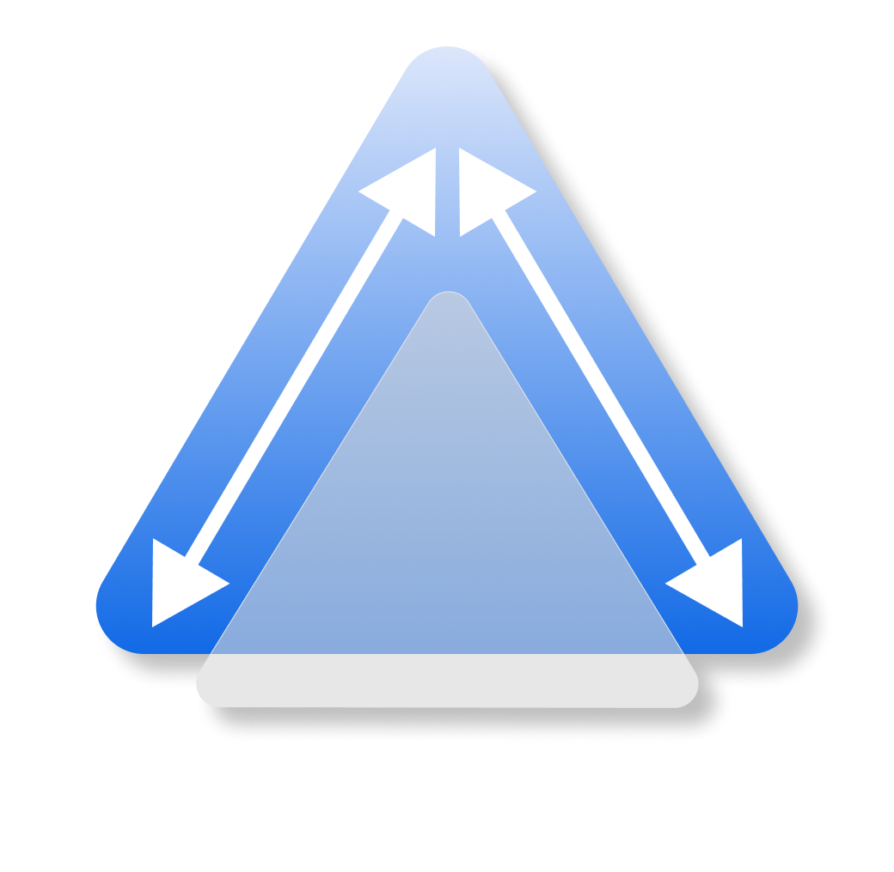
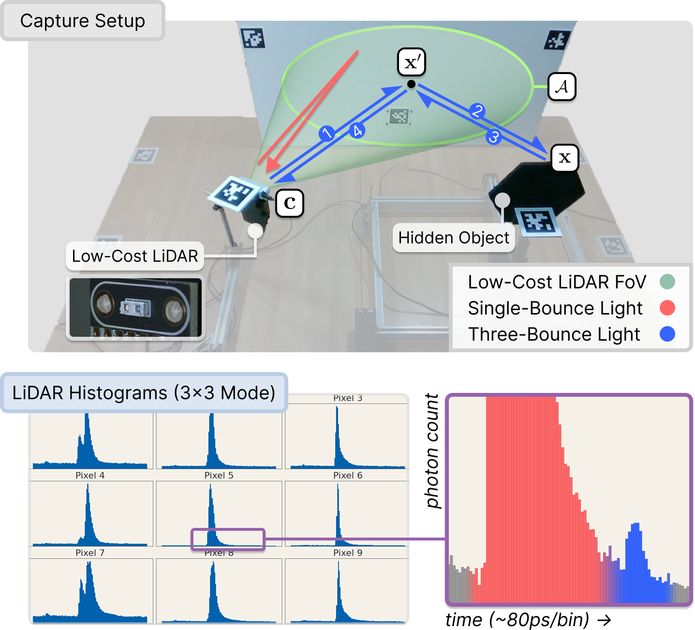
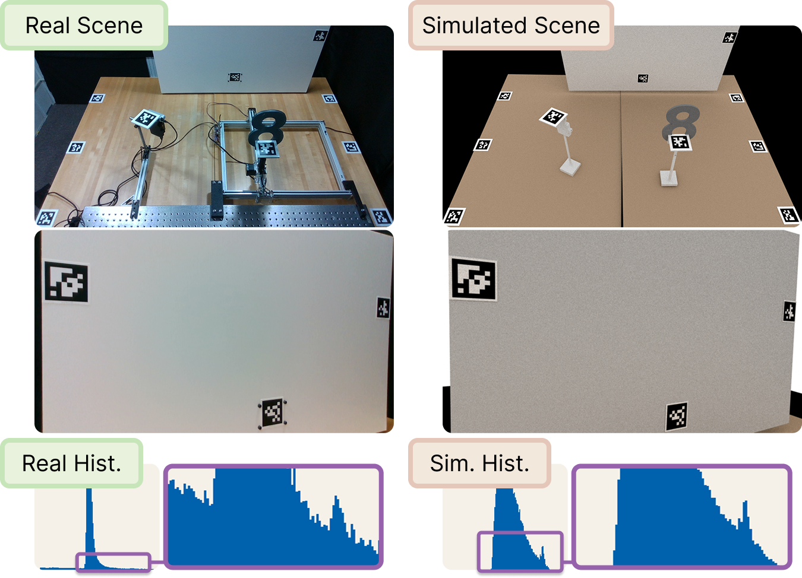
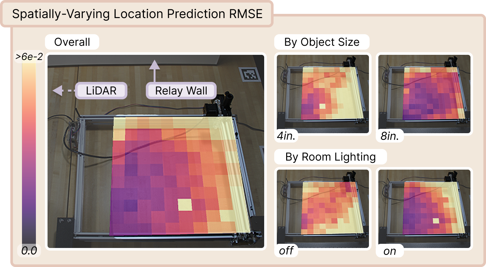
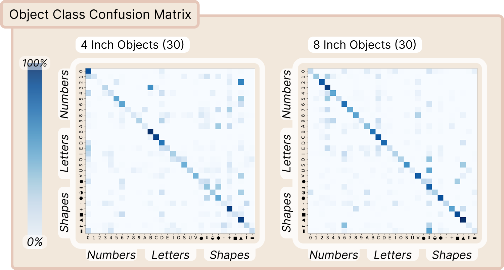

DENALIA Dataset Enabling Non-Line-of-Sight Spatial Reasoning with Low-Cost LiDARs
CVPR 2026 (Highlight)
{kind=link}
Abstract
Consumer LiDARs in mobile devices and robots typically output a single depth value per pixel. Yet internally, they record full time-resolved histograms containing direct and multi-bounce light returns; these multi-bounce returns encode rich non-line-of-sight (NLOS) cues that can enable perception of hidden objects in a scene. However, severe hardware limitations of consumer LiDARs make NLOS reconstruction with conventional methods difficult. In this work, we motivate a complementary direction: enabling NLOS perception with low-cost LiDARs through data-driven inference. We present DENALI, the first large-scale real-world dataset of space–time histograms from low-cost LiDARs capturing hidden objects. We capture time-resolved LiDAR histograms for 72,000 hidden-object scenes across diverse object shapes, positions, lighting conditions, and spatial resolutions. Using our dataset, we show that consumer LiDARs can enable accurate, data-driven NLOS perception. We further identify key scene and modeling factors that limit performance, as well as simulation-fidelity gaps that hinder current sim-to-real transfer, motivating future work toward scalable NLOS vision with consumer LiDARs.
Capture rig and dataset objects
{kind=link}

A low-cost ams TMF8828 SPAD LiDAR co-located with an Intel RealSense RGB-D camera illuminates a relay wall. A hidden object on a 2D motorized gantry sits outside the LiDAR's direct field of view, so only indirect three-bounce returns reach the sensor. The third-bounce signal (the small post-peak bumps in each histogram) carries the information used for downstream NLOS perception.

30 retroreflective objects (10 letters, 10 digits, 10 shapes) printed at 4 in. and 8 in. scales. Every object ships with a ground-truth CAD mesh for digital-twin rendering. Held-out variants in italic, cardstock, and white finishes support generalization analyses.
Live inference
We ship a Dash + Plotly web app that runs the three pretrained inference heads (object class, object size, and 2D location) live over the captured 3×3 SPAD histograms. Below: walking through 56 gantry locations for object 9 at 8″ / lights on, then toggling each control:

Live web GUI streaming pretrained 1D-CNN predictions over the captured 3×3 histograms.
Paired digital twins
{kind=link}

For every captured scene we render a Mitsuba 3 digital twin matched in geometry and LiDAR pose. The paired real and simulated measurements enable quantitative analysis of simulation fidelity, sim-to-real transfer, and task-aware sensor design for NLOS perception with low-cost LiDARs.
Selected results
{kind=link}

Spatial mapping of NLOS localization accuracy. RMSE (m) over true gantry positions for a 1D CNN, broken down by object size and room lighting. Accuracy improves for larger 8 in. objects nearer the relay wall, and lighting induces distinct error patterns, pointing at residual confounding of object, geometry, and ambient light.
{kind=link}

Object classification across shape and size. A 1D CNN trained independently per object scale shows that larger 8 in. objects are consistently easier to classify than 4 in. ones, with confusion concentrated within shape families (digits, letters, shapes).
Citation
@inproceedings{behari2026denali,
title = {{DENALI}: A Dataset Enabling Non-Line-of-Sight Spatial Reasoning with Low-Cost LiDARs},
author = {Behari, Nikhil and Rivero, Diego and Apostolides, Luke and Ghosh, Suman and Liang, Paul Pu and Raskar, Ramesh},
booktitle = {Proceedings of the IEEE/CVF Conference on Computer Vision and Pattern Recognition (CVPR)},
year = {2026},
}